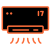
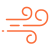
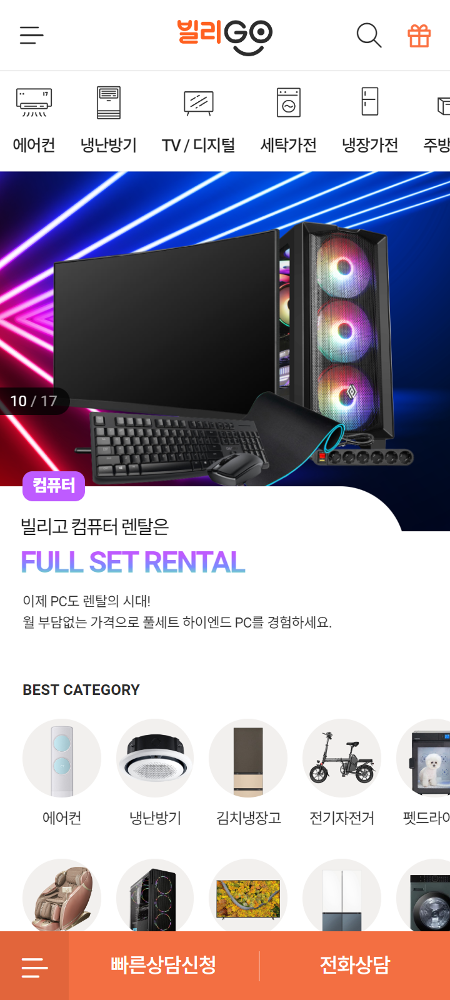
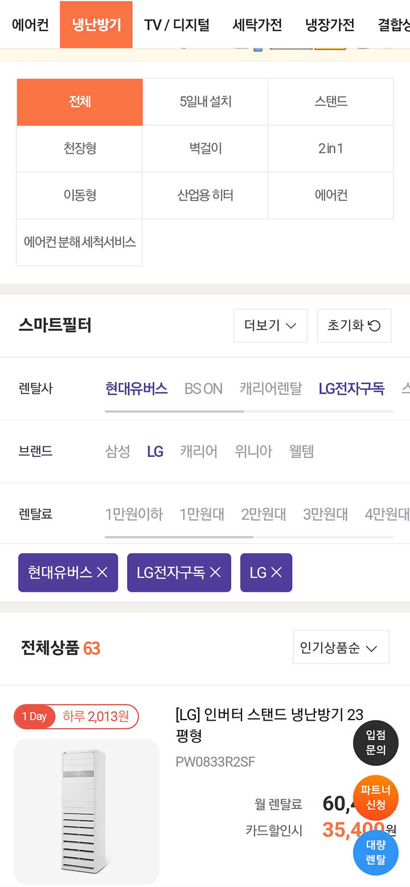
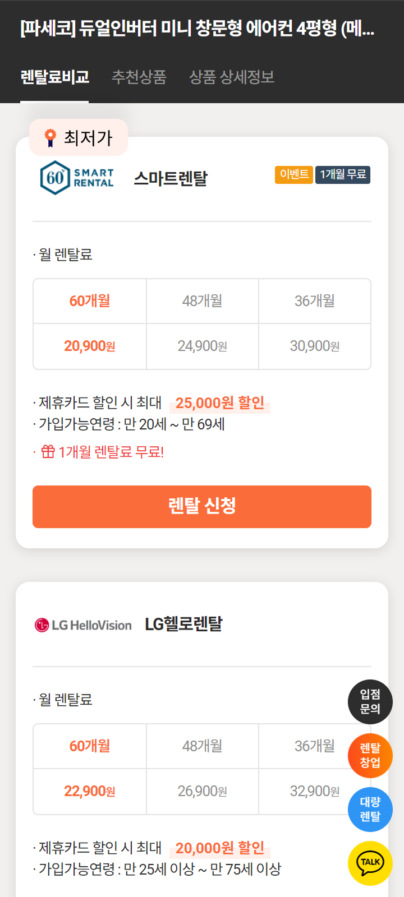
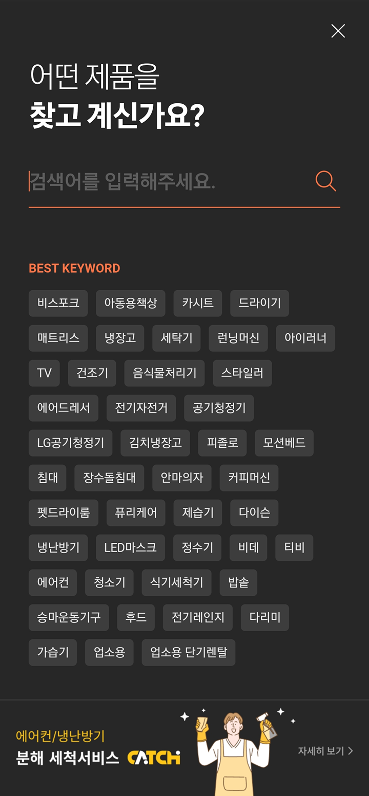
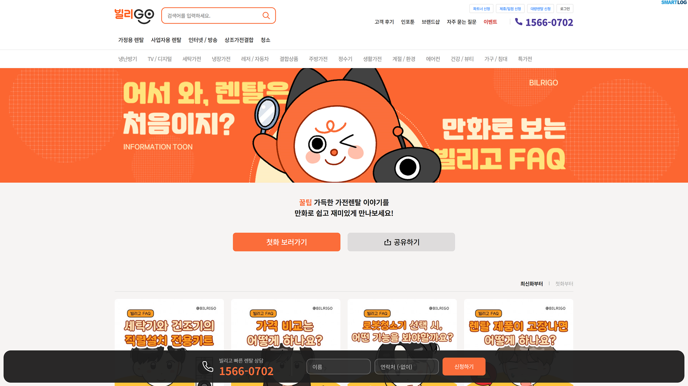
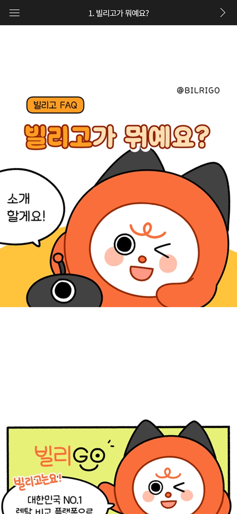

빌리고 UX / UI 디자인 고도화 및 퍼플리싱 (PC, Mobile)
2021.04 ~ 2025.04
가전렌탈 가격 비교 플랫폼인 빌리고의 웹사이트를 UX/UI 및 퍼블리싱 총괄로서 약 4년간 고도화하였습니다.
모바일 메인 카테고리와 상품 비교 페이지 개편, 신규 화면 디자인 및 퍼블리싱,
크로스브라우징·SEO·웹 접근성 개선, CSS 코드 및 이미지 등 리소스 최적화 작업을 진행했습니다.
이를 통해 Chrome Lighthouse 성능 점수를 10점 미만에서 77점으로 개선했으며, 서비스 운영 과정에서
부정적 VoC도 약 20% 감소했습니다.
※ 회사 전체 실적(2021~2024년): 연매출 49.7억 원 → 93.3억 원(약 87.7% 성장), 당기순손익 약 -2.3억 원 → 8.29억 원(흑자 전환)
초기 빌리고는 ‘Noto Sans KR’, “Roboto”, ‘NanumSquareRound’, ‘Play’ 등 4종이 넘는 폰트를 사용하여 다소 복잡한 font system을 갖고 있었습니다.
또한, 사이트 로딩 시 font파일의 리소스가 많아 로딩시간이 길었습니다. 문제점을 개선하기 위해 font는 가장 대중적이고 기본적인 ‘Noto Sans KR’로 통일하였고,
리소스 또한 줄여 페이지 로딩시간을 효과적으로 단축시켰습니다.


기존 단순 텍스트 버튼으로만 되어있던 헤더 카테고리 메뉴의 직관성을 높여주기 위해 제작되었습니다.
각 카테고리의 대표 상품을 라인아이콘으로 모델링 하였고 아이콘과 레이블링을 연결시켜 선택의 혼동을 최소화하였습니다.

각각의 카테고리에 적절한 아이콘과
레이블링으로 직관적인 메뉴 제공
1 depth 카테고리가 아닌 2 depth 이상의 인기 카테고리는
실제 상품 이미지로 노출시켜 클릭 유도
A. Main header category와 확실한 구별을 두면서,
인기 있는 실제 렌탈 상품을 노출해 렌탈 신청률을 높이기 위함입니다.

카테고리와 세부 카테고리를 함께 노출하여
원하는 상품군을 빠르게 탐색할 수 있도록 구성했습니다.
렌탈사·브랜드·렌탈료 조건으로 원하는 상품을 좁혀보고,
선택한 조건을 태그로 확인하고 해제할 수 있도록 구성했습니다.

렌탈사 별 / 개월 수 별 렌탈료를 노출시켜
좀 더 직관적인 가격비교가 가능

레이어 안에서 검색어를 바로 입력할 수 있도록
입력창을 상단에 배치했습니다.
인기 검색어를 태그 형태로 제공하여
직접 입력하지 않고도 원하는 상품을 탐색하도록 구성했습니다.
A. 검색을 하기 위해 페이지가 넘어가게 되면 검색, 검색결과 총 2번의 뎁스로 나눠집니다.
웹 특성상 잠깐의 로딩도 피로감을 주며 이탈로 이어지기 때문에 검색 레이어를 사용했습니다.

빌리고의 캐릭터인 빌리와 리고를
노출하면서 ‘밈’을 활용한 UX 라이팅으로
친숙한 느낌을 주어 렌탈에 대한 거부감과
어려움 해소 유도
첫화를 바로 볼 수 있는 버튼을 상단에 배치하여
첫 사용자들이 원클릭으로 컨텐츠에 노출될 수 있도록 유도

‘4컷 만화’ 콘텐츠지만 컷당 풀 페이지로 노출하는
기존 웹툰의 UX를 계승하여 익숙한 UI를 제공